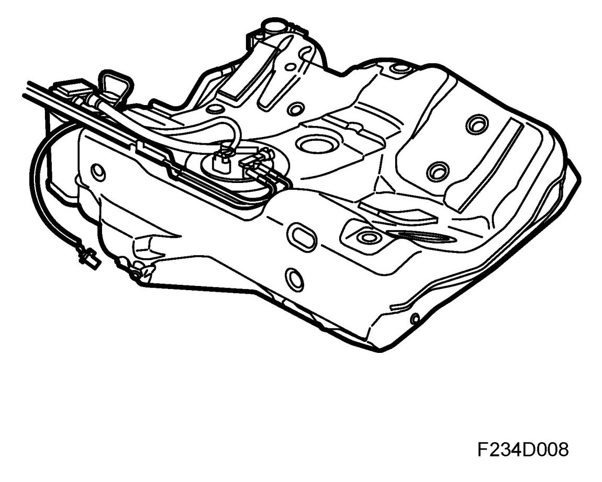
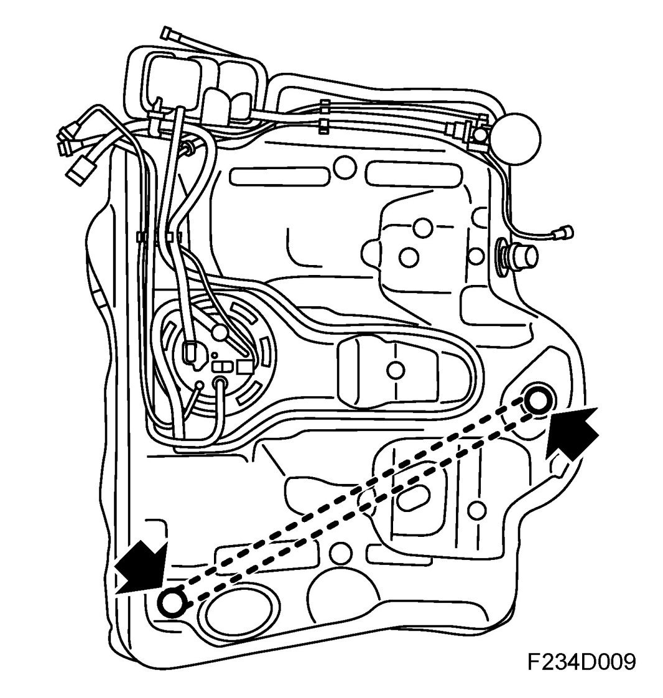
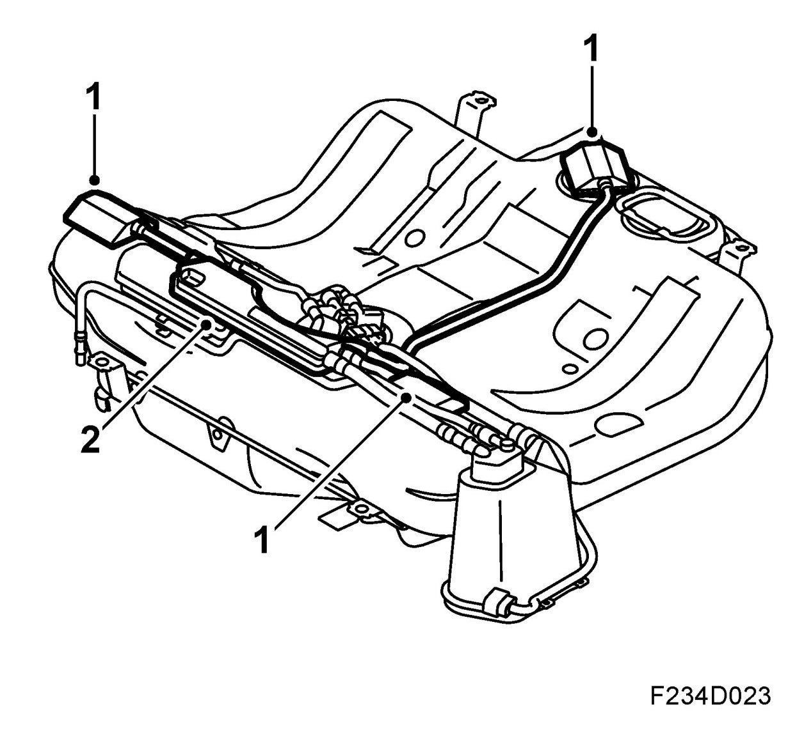
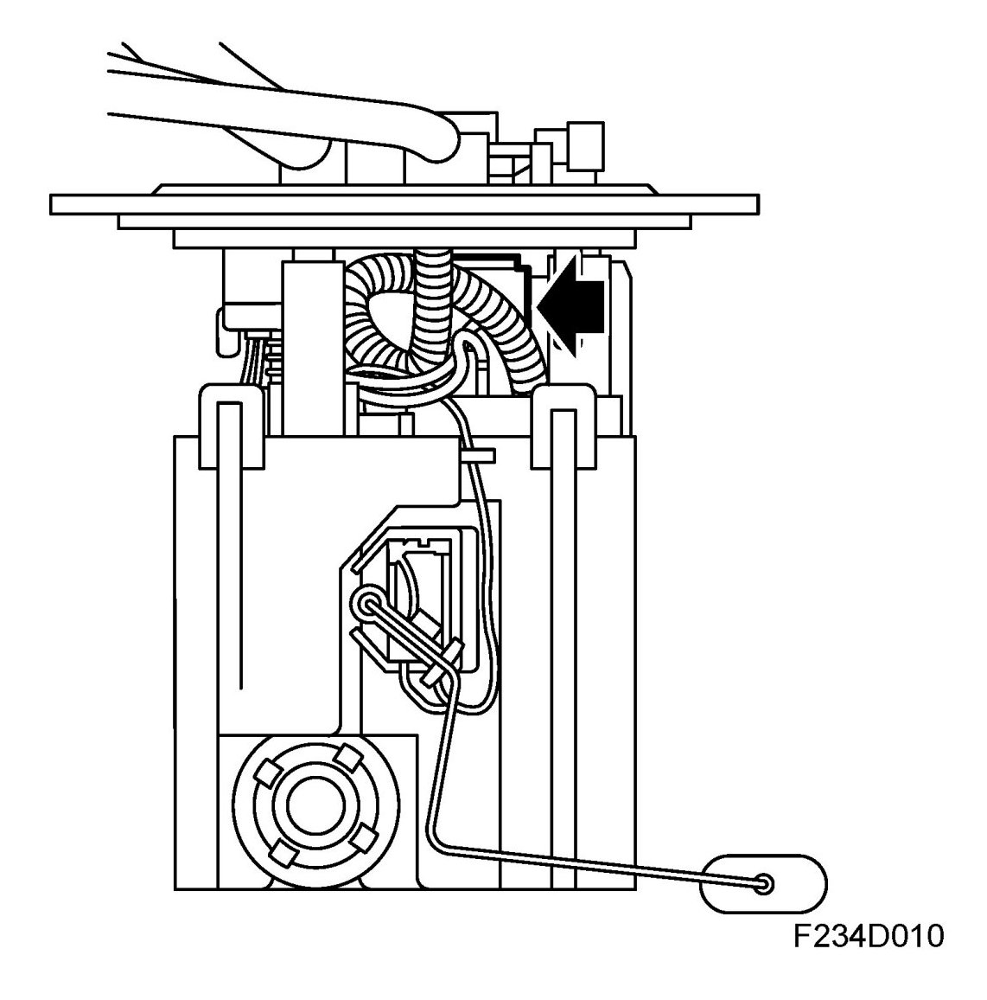
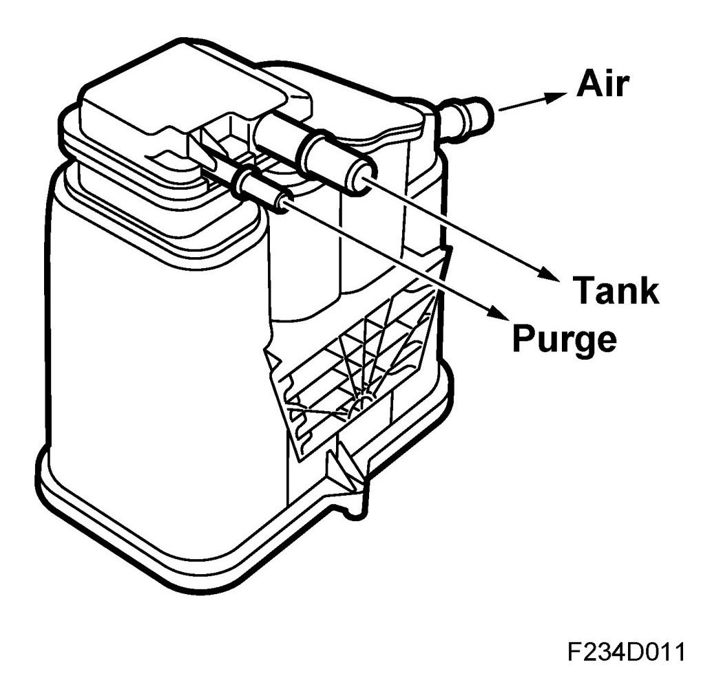
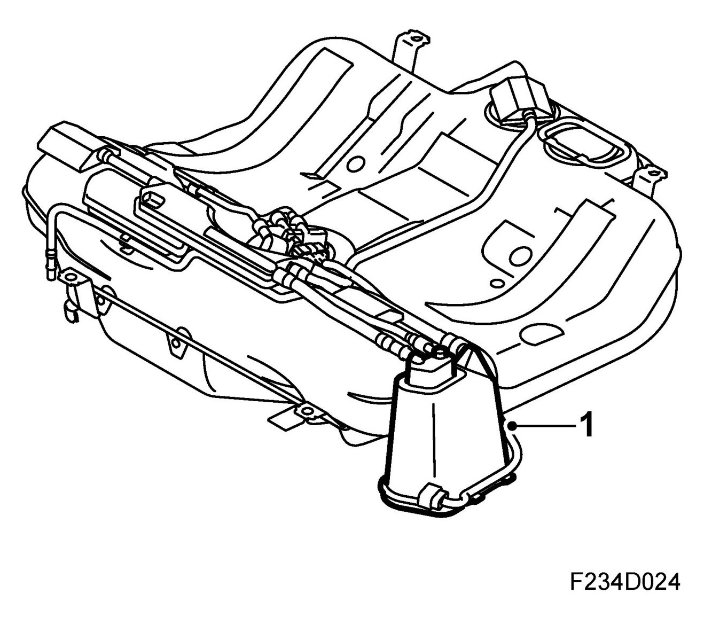
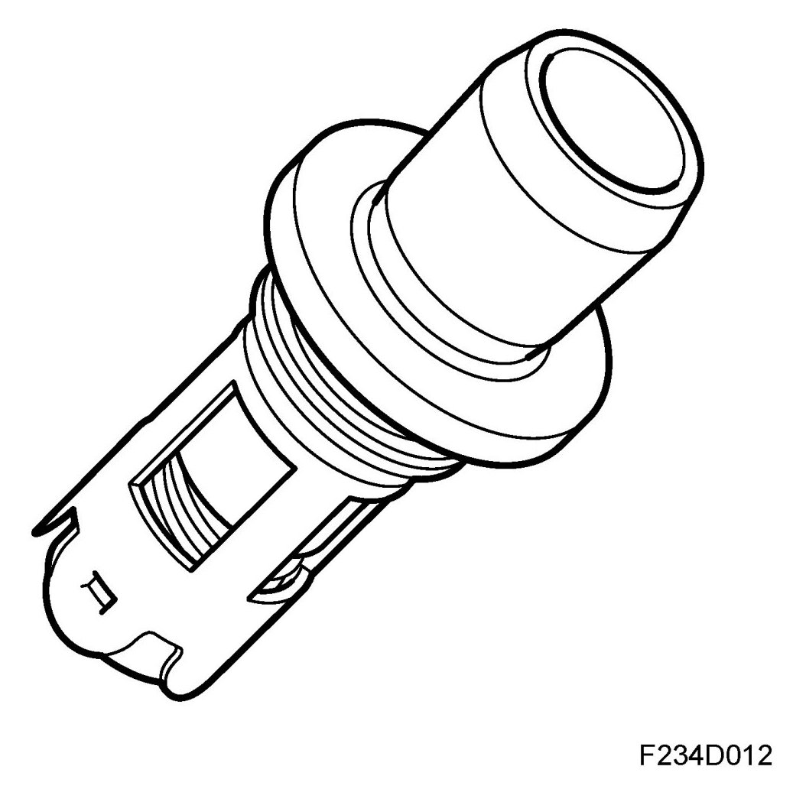
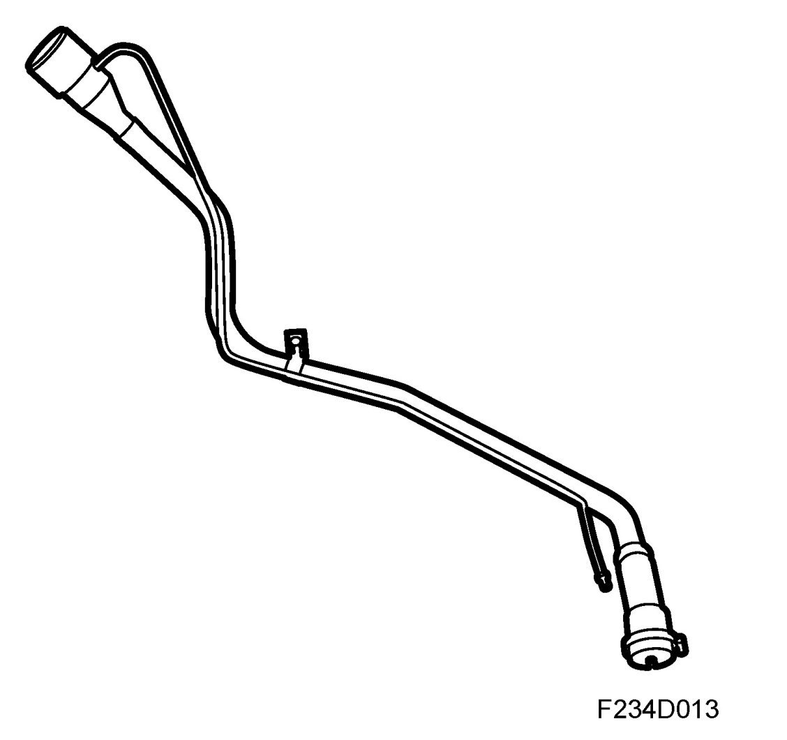
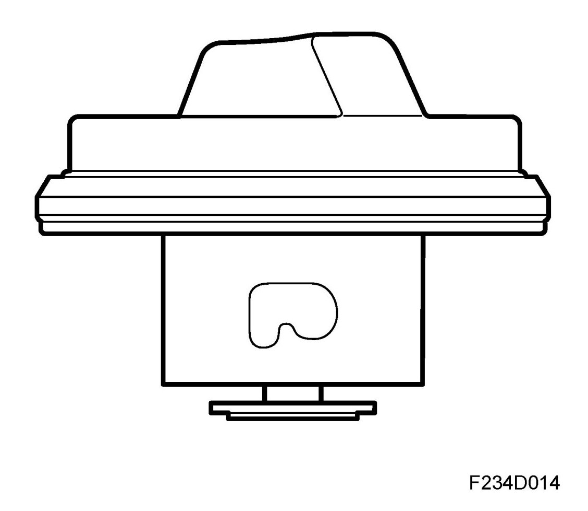
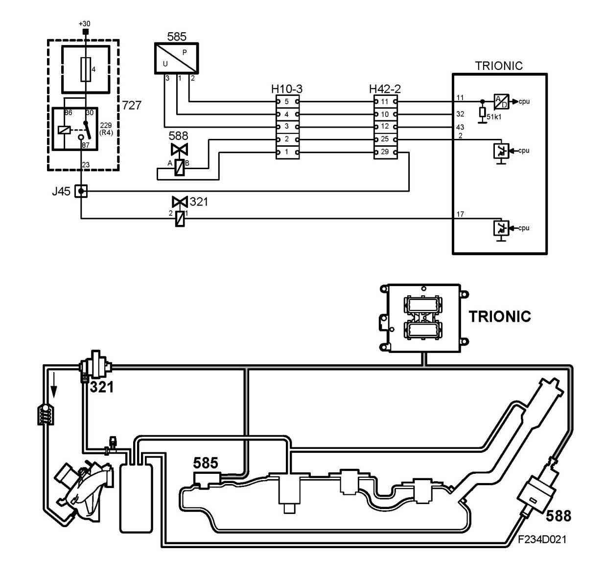

Fuel Tank: Description and Operation
Detailed Description
Fuel tank

The tank has a volume of 62 liters (EU tank: 58 liters). All components on the tank are welded, except for the pressure sensor, fuel pump and EVAP canister.
Shut-off valve, roll-over

Shut-off valve, roll-over, is only closed on roll-over and thus prevents fuel leak.
A line connects the valve to the evaporative emission canister. Vapors which expand in the tank are vented through the valve and canister.
Shut-off valve, roll-over, EU tank

Fuel tank, EU
1. Roll-over valve
2. Fluid trap
Roll-over valves are only closed in the event of the car rolling over. This prevents fuel leaks.
A line from each roll-over valve connects the three valves with the fluid trap. The purpose of the fluid trap is to prevent fluid fuel from entering the EVAP canister. A line connects the valve to the EVAP canister. Vapors which expand in the tank are vented through the valves and canister.
Float valve

A line connects the float valve to the evaporative emission canister. The float valve prevents fuel in liquid form reaching the canister. During filling up, vapors in the tank are pressed through the float valve into the evaporative emission canister.
A spring-loaded float closes the valve when the tank is full or on roll-over.
Evaporative emission canister

The evaporative emission canister is placed on the right-hand side of the tank and consists of a container filled with a special pelletised charcoal. Pelletised charcoal is used to give as little back pressure as possible from the canister. Hydrocarbons which have vaporized in the tank are passed through a line to the canister. During filling up, the hydrocarbons and air from the tank are evacuated via a line to the carbon filter which absorbs the hydrocarbons.
Lines connect the evaporative emission canister with the fuel tank, purge valve and shut-off valve. When the engine starts, air is drawn through the shut-off valve to the canister and then via the purge valve into the intake manifold. The hydrocarbons follow and are burned in the engine.
The evaporative emission canister absorbs around 70 g hydrocarbon per tank filling. During driving, the canister is purged; the time required for this depends on the driving style. The canister can absorb a maximum of around 125 g hydrocarbons.
EVAP canister, EU tank

1. EVAP canister
The evaporative emission canister is placed on the right-hand side of the tank and consists of a container filled with a special pelletised charcoal. Pelletised charcoal is used to give as little back pressure as possible from the canister. Hydrocarbons which have vaporized in the tank are passed through a line to the canister. During filling up, the hydrocarbons and air from the tank are evacuated via a line to the carbon filter which absorbs the hydrocarbons.
Lines connect the EVAP canister with the fuel tank and purge valve. When the engine starts, air is drawn through the shut-off valve to the canister and then via the purge valve into the intake manifold. The hydrocarbons follow and are burned in the engine.
Check valve, fuel tank

The check valve is normally closed and only allows flow in the direction to the tank.
In this way the valve prevents back-spit on nozzle shut-off.
Fuel filler pipe

Fuel is added through the filler pipe and then based through a check valve into the tank.
At the top of the filler pipe is an insert that provides a good fit around the fuel pump nozzle when refuelling. The insert also includes an ejector. (EU tank does not have an ejector.)
Filler cap

The filler cap is an important part of the tank leakage diagnosis. If the diagnosis shows a leak, Trionic will set a diagnostic trouble code.
Tank leak diagnosis

The tank leak diagnosis is used to check that there are no leaks in the evaporative emission system. A leak is characterized by the absence of reduced pressure in the system during diagnosis.
Diagnosis is performed once per trip and the aim is to establish any leak greater than a hole corresponding to 0.5 mm (0.020") in diameter occurring in the evaporative emission system.